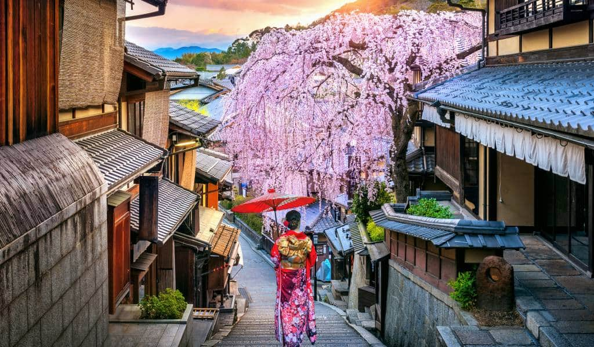
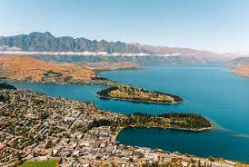

Destinations
By Carlos Béjar
Back to Homepage
Kyoto

Beauties: Kyoto is renowned for its stunning classical Buddhist temples, Shinto shrines, beautiful gardens, and traditional wooden houses. Key attractions include the Fushimi Inari Shrine with its thousands of red torii gates, the Arashiyama Bamboo Grove, and the historic Gion district.
- Country: Japan
- State: Kyoto Prefecture
- Population: Approximately 1.46 million
- Latitude: 35.0116° N
- Longitude: 135.7681° E
Queenstown

Known as the adventure capital of New Zealand, Queenstown offers breathtaking landscapes with dramatic mountains and crystal-clear lakes. Popular spots include Lake Wakatipu, the Remarkables mountain range, and numerous outdoor activities like bungee jumping, skiing, and hiking.
- Country: New Zealand
- State: Otago
- Population: Approximately 17,000
- Latitude: 45.0311° S
- Longitude: 168.6626° E
Barcelona

Barcelona is famous for its unique architecture, particularly by Antoni Gaudí. Highlights include the Sagrada Familia basilica, Park Güell, and the Gothic Quarter. The city also boasts beautiful beaches and vibrant street life.
- Country: Spain
- State: Catalonia
- Population: Approximately 1.62 million
- Latitude: 41.3879° N
- Longitude: 2.1699° E
Cape Town

Cape Town is known for its stunning coastal scenery and iconic landmarks. Notable attractions include Table Mountain, Cape Point, and the picturesque beaches of Clifton and Camps Bay. The city is also famous for its vibrant cultural scene and the historic V&A Waterfront.
- Country: South Africa
- State: Western Cape
- Population: Approximately 4.7 million
- Latitude: -33.9249° S
- Longitude: 18.4241° E
Banff

Nestled in the Canadian Rockies, Banff is renowned for its breathtaking natural landscapes, including turquoise lakes, snow-capped mountains, and expansive forests. Key attractions include Lake Louise, the Banff Gondola, and the scenic Icefields Parkway.
- Country: Canada
- State: Alberta
- Population: Approximately 8,000
- Latitude: 51.1784° N
- Longitude: 115.5708° W